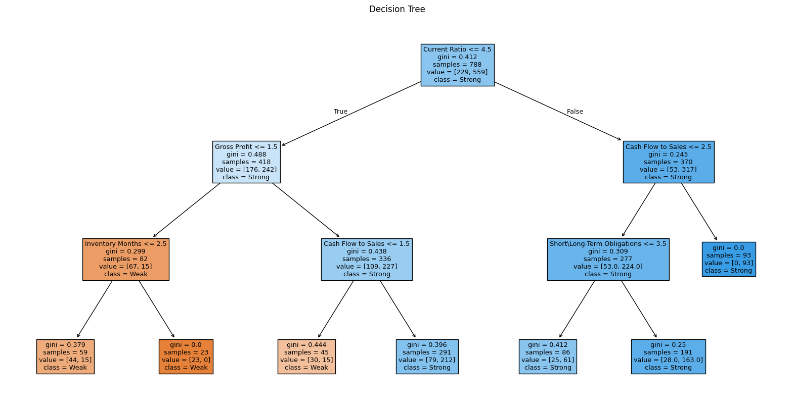

This section presents the application of a Decision Tree Classifier to analyze financial data of companies and predict their financial resilience. The target variable is Grade, where:
1 = Weak financial resilience2 = Strong financial resilienceThe goal is to identify which financial ratios most effectively predict the target class, and to evaluate the model's performance on unseen data.
The model was trained on the following financial ratios:
DecisionTreeClassifier from scikit-learn was trained using default parameters.| Feature | Importance |
|---|---|
| Gross Profit | 0.378 |
| Current Ratio | 0.376 |
| Inventory Months | 0.156 |
| Cash Flow to Sales | 0.047 |
| Quick Ratio | 0.029 |
| Obligators Months | 0.015 |
| Self-Capital to Total Assets | 0.000 |
| Short\Long-Term Obligations | 0.000 |
| Additional Sales This Year / Sales Last Year | 0.000 |
 🔍 Conclusion: The most important predictors are Gross Profit and Current Ratio, which together account for over 75% of the model’s decision-making.
A plot of the decision tree reveals a hierarchical decision process:
Current Ratio ≤ 4.5Gross Profit and Quick Ratio, leading to the identification of weak companiesCash Flow to Sales and Obligators MonthsThe tree reflects intuitive financial logic, such as associating low liquidity and low profit margins with financial weakness.
| Class | Precision | Recall | F1-Score | Support |
|---|---|---|---|---|
| 1 (Weak) | 0.68 | 0.34 | 0.45 | 50 |
| 2 (Strong) | 0.81 | 0.95 | 0.87 | 147 |
| Predicted Weak | Predicted Strong | |
|---|---|---|
| Actual Weak | 17 | 33 |
| Actual Strong | 8 | 139 |
The Decision Tree model provides interpretable rules and performs well overall. However, its limited sensitivity to the minority class (financially weak companies) may present risks in real-world applications where detecting financially vulnerable firms is critical. Future improvements could include: